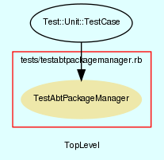

|  |
TestAbtPackageManager.rb
Unit testing for AbtPackageManager class.
Created by Eric D. Schabell <erics@abtlinux.org> Copyright 2006, GPL.
This file is part of AbTLinux.
AbTLinux is free software; you can redistribute it and/or modify it under the terms of the GNU General Public License as published by the Free Software Foundation; either version 2 of the License, or (at your option) any later version.
AbTLinux is distributed in the hope that it will be useful, but WITHOUT ANY WARRANTY; without even the implied warranty of MERCHANTABILITY or FITNESS FOR A PARTICULAR PURPOSE. See the GNU General Public License for more details.
You should have received a copy of the GNU General Public License along with AbTLinux; if not, write to the Free Software Foundation, Inc., 51 Franklin St, Fifth Floor, Boston, MA 02110-1301 USA
- setup
- testDowngradePackage
- testFreezePackage
- testInstallPackage
- testReinstallPackage
- testRemovePackage
setup method for testing AbtPackageManager.
[ show source ]
# File TestAbtPackageManager.rb, line 36
36: def setup
37: @pkgMgr = AbtPackageManager.new()
38: end
Test method for ‘AbtPackageManager.testDowngradePackage()’
[ show source ]
# File TestAbtPackageManager.rb, line 64
64: def testDowngradePackage
65: assert( @pkgMgr.downgradePackage( "dummy", "1.2" ), "testDowngradePackage()" )
66: end
Test method for ‘AbtPackageManager.testFreezePackage()’
[ show source ]
# File TestAbtPackageManager.rb, line 71
71: def testFreezePackage
72: assert( @pkgMgr.freezePackage( "dummy" ), "testFreezePackage()" )
73: end
Test method for ‘AbtPackageManager.testInstallPackage()’
[ show source ]
# File TestAbtPackageManager.rb, line 43
43: def testInstallPackage
44: assert( @pkgMgr.installPackage( "dummy" ), "testInstallPackage()" )
45: end
Test method for ‘AbtPackageManager.testReinstallPackage()’
[ show source ]
# File TestAbtPackageManager.rb, line 50
50: def testReinstallPackage
51: assert( @pkgMgr.reinstallPackage( "dummy" ), "testReinstallPackage()" )
52: end
Test method for ‘AbtPackageManager.testRemovePackage()’
[ show source ]
# File TestAbtPackageManager.rb, line 57
57: def testRemovePackage
58: assert( @pkgMgr.removePackage( "dummy" ), "testRemovePackage()" )
59: end